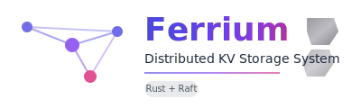
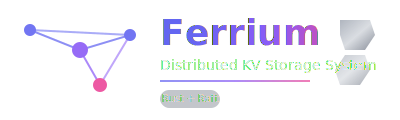
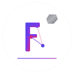

Main Logo (Light Theme)

Primary logo for light backgrounds, documentation, and general use
Dark Theme Logo

Optimized for dark backgrounds and dark mode interfaces
Icon Version

Compact icon for favicons, app icons, and small displays (32px, 64px, 128px)
📋 Usage Guidelines
HTML Implementation
<!-- Responsive logo that adapts to theme -->
<picture>
<source media="(prefers-color-scheme: dark)" srcset="logo-dark.svg">
<source media="(prefers-color-scheme: light)" srcset="logo.svg">
<img src="logo.svg" alt="Ferrium" width="400"/>
</picture>
<!-- For favicons (convert to PNG/ICO) -->
<link rel="icon" type="image/svg+xml" href="logo-icon.svg">
Markdown (GitHub README)
<div align="center">
<picture>
<source media="(prefers-color-scheme: dark)" srcset="logo-dark.svg">
<source media="(prefers-color-scheme: light)" srcset="logo.svg">
<img src="logo.svg" alt="Ferrium Logo" width="400"/>
</picture>
</div>
🎨 Design Elements
- Color Palette: Purple to pink gradient (#4F46E5 → #7C3AED → #DB2777)
- Metal Accents: Gray gradient representing iron/steel (#71717A → #A1A1AA)
- Network Nodes: Connected circles representing distributed systems
- Typography: Modern sans-serif with dark subtitle for contrast (#1E293B light / #E2E8F0 dark)
- Theme: Combines iron/metal (Ferrium = Latin for iron) with tech/network concepts
✅ Do's
- Use the appropriate version for your background (light/dark)
- Maintain aspect ratio when scaling
- Provide adequate white space around the logo
- Use the icon version for small displays (≤64px)
❌ Don'ts
- Don't modify colors or gradients
- Don't stretch or distort the logo
- Don't use on backgrounds that clash with the color scheme
- Don't remove or modify the distributed network elements